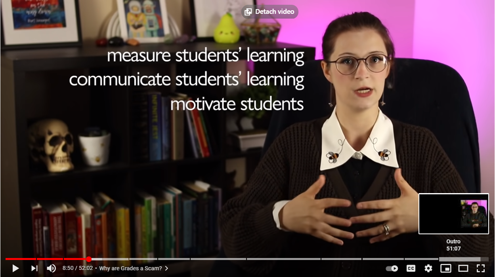

Grading is not a scam, and Motivation is not a myth - A rebuttal to a stupid cunt.
June 16th, 2021
I found this horrible little video on YouTube today, and was so impressed by its complete shittiness, that I felt I had to make a critique. You don't need to watch the whole thing of course, I'll give you the highlights.
Alright first we have the story of some assumed precocious and happy little child who "loves asking questions." This character trait is just assumed to be good, for absolutely no explanation. The first few minutes of the video take us on the journey of this once happy child as she "makes herself sick LITERALLY SICK worrying about her grades," and engages in many other destructive behaviours such as taking classes for the Easy A, as we used to call it. The catalyst for this awful behaviour was... teachers giving gold stars to the kids who didn't ask so many questions.
Yeah that's not a thing that happens, unless this girl was asking so many annoying questions that the teachers got fed up with her bullshit. Like, the teacher is trying to get them all to learn how to read in the first grade, but fuckface over here keeps asking irrelevant questions like "what colours can dogs be?" that little kids like to ask for no reason. But you're not supposed to think about this too hard, especially little questions like "what would happen if every kid in the class also asked stupid irrelevant questions for no reason, how would they ever learn how to do read, or basic math?" You're not supposed to ask those questions, because that would encroach on the infantile narcissism of the premise. Some random cunt making the class grind to a halt by continuously asking questions is one of the most annoying memories that we all have from school, but apparently by not devoting 100% of the teachers time to that girl she's been basically abused or something.
And I can't get over this. We're 3 minutes into this video and I'm already annoyed. It's her contrived story and yet she's somehow still drawing the wrong lessons from it.
However, where this gets hilariously stupid, is when we come around to the point of the video, wherein she will begin to explain that "grading is a scam, and motivation is a myth," making sure to tell you that she is indeed a Professor, and thus a Credentialled Smart Person. She starts off by going over the history of grades, why they exist, and the arguments for them. The arguments she gives in favour of grades, can be basically summarized as follows:
1) They measure the students' learning.
2) They communicate student's learning.
3) They motivate students.
Tight lipped cat lady.
These all seem fairly obviously true, and follow with most people's experiences. After all, the kid who got 95% on the math test has a better understanding of the subject matter than the kid who got 45% on the same test. As long as said test is well designed, covering the material fully, we can say that such tests do in fact measure the students's learning and quantify their mastery of the subject matter to a very accurate degree. That such tests motivate students, at least some of the time, is also unquestionable, even if that motivation comes not from the students innate desire to get a high grade, but from fear of their parents, or whatever. All the above arguments for grades are obviously true.
Skye!
I'm going to spare you the 10,000 words she uses trying to justify why these obvious truths are in fact not correct, even though they are. She starts off by using an example of a grade on an English Paper. She claims that getting a C- isn't necessarily helpful, since you might be strong at some parts of the assignment, but weak at others.
I mean... yeah? That's an argument for more detailed grades. Like, people who review movies or videogames often give combined scores from various aspects. So, Characters 8/10, Plot 5/10, Musical Score 9.5/10, and so on before finally, Overall: 6.7/10. I mean, I came up with this off the top of my head, but an English Teacher who graded short stories with a system such as:
TDC_ARTICLE_START
Plot: /10
Character: /10
Setting: /10
Theme: /10
TDC_ARTICLE_STOP
Would be my hero. But none of this is an argument against grading, only an argument for grading in more detail.
However where she goes next is so absurd I honest to god wondered if this was a subtle parody of some midwit English Professor. She claims that this is even true for Math tests. You know what, I'm re-embedding the video from that point. And in fact, let me even quote what she says, because it's so unbelievable.
TDC_ARTICLE_START
And it's even true for more "objective" subjects like math. If you've taken an algebra test and get a B+, what does that mean? Does it mean you know all the concepts, but just made a couple arithmetic errors? Does it mean you understand most of the concepts, but it's just one type of question that really throws you off? Does it mean you actually understand everything, but you didn't eat breakfast that morning, or you were distracted during the test because you had a headache or you didn't get enough sleep last night because you had to stay up late for that English Paper?
And even if you had comments on your test explaining exactly what you did well and what you needed to improve on, research shows that if the paper has comments, and a grade, most students just skip the comments and focus only on the grade. When something is graded, feedback is ignored.
TDC_ARTICLE_STOP
Uh???? WTF is this? I'm struggling to put into words how retarded what she just said was. How the fuck could you not know why you got an answer wrong AFTER getting the test back? Like, I'm pretty sure that you're going to know. If she's trying to make a point here I legitimately have zero clue what she's going on about. I guess she's trying to say that if someone just glances at the grade, they won't know their specific mistakes? I mean, yeah? Thank you Captain Obvious!
What she doesn't appreciate, or at least pretends to not appreciate, is that the results of the math test are objective. You have no one to blame but yourself if you get a question wrong that other people in your class got right. Whatever the mistakes were, they were your own. This midwit apparently just thinks that kids shouldn't bother writing tests or getting feedback or something, emphasis on the something because SPOILER WARNING: her suggestions for replacing grading are half-baked at best.
But it's the second half of the first paragraph of her statement that's so laughably stupid. "What if you didn't get enough sleep or had a headache?" Oh okay. I mean, that's a thing? It's hard for me to respond to such clear Tactical Nihilism. Yeah, you might have made some stupid mistakes on a math test because you were tired. I mean, thank you for describing a thing that happens. I guess because 5% of your overall grade per test might be on average based on sleep deprivation versus getting a good nights sleep, grades are 100% worthless.
Remember, if you would have gotten a 95% after a great nights sleep, but only got 90% because you made a silly error after a sleepless night, the entire concept of grades is fraudulent. There is no reasonable way that someone could assume you know the material better than someone who got 15% on the test and quit halfway through because they understand so little. Absolutely no way. And we haven't even taken into account a headache! If a single person in the class has a headache, how could one possibly think that testing and grading a math test would have any value!
 Throughout her 50 minute long video, she keeps making Almost The Right Point. As a good example, right after the laughable "grades don't indicate AT ALL how well you can do math," debacle, she points out that some students intentionally choose easier courses for easy grades. They do this because there are real life ramifications to getting a bad grade, even in an advanced class.
This is Almost the Right Point. Rather than point out that difficult classes should absolutely be considered differently when, say, universities are considering applicants, she just... claims the entire concept of grades needs to go.
Throughout her 50 minute long video, she keeps making Almost The Right Point. As a good example, right after the laughable "grades don't indicate AT ALL how well you can do math," debacle, she points out that some students intentionally choose easier courses for easy grades. They do this because there are real life ramifications to getting a bad grade, even in an advanced class.
This is Almost the Right Point. Rather than point out that difficult classes should absolutely be considered differently when, say, universities are considering applicants, she just... claims the entire concept of grades needs to go.
 It's kind of a shame, because there is a serious conversation to be had amongst people who are actually intelligent about specific problems such as this in the education system. After reading, writing, and basic math, the entire rest of the curriculum is not objectively of value. That's not to say that it isn't of value, but I'm quite sure that there are lots of people who do poorly in school because they are totally uninterested in the, frankly, often fairly random curriculum.
Or what about scheduling things differently, such as one day of the week being multiple hours of science, so the students can really get involved in that. Or perhaps we change the way we do homework? Or maybe we have the students try to read more from the textbook ahead of class, so more teacher time can be dedicated to question answering.
These are all suggestions right off the top of my head, but they're a whole lot less stupid than "the entire concept of grades is fraudulent because you might not have eaten breakfast."
It's kind of a shame, because there is a serious conversation to be had amongst people who are actually intelligent about specific problems such as this in the education system. After reading, writing, and basic math, the entire rest of the curriculum is not objectively of value. That's not to say that it isn't of value, but I'm quite sure that there are lots of people who do poorly in school because they are totally uninterested in the, frankly, often fairly random curriculum.
Or what about scheduling things differently, such as one day of the week being multiple hours of science, so the students can really get involved in that. Or perhaps we change the way we do homework? Or maybe we have the students try to read more from the textbook ahead of class, so more teacher time can be dedicated to question answering.
These are all suggestions right off the top of my head, but they're a whole lot less stupid than "the entire concept of grades is fraudulent because you might not have eaten breakfast."

Throughout her 50 minute long video, she keeps making Almost The Right Point. As a good example, right after the laughable "grades don't indicate AT ALL how well you can do math," debacle, she points out that some students intentionally choose easier courses for easy grades. They do this because there are real life ramifications to getting a bad grade, even in an advanced class.
This is Almost the Right Point. Rather than point out that difficult classes should absolutely be considered differently when, say, universities are considering applicants, she just... claims the entire concept of grades needs to go.
It's kind of a shame, because there is a serious conversation to be had amongst people who are actually intelligent about specific problems such as this in the education system. After reading, writing, and basic math, the entire rest of the curriculum is not objectively of value. That's not to say that it isn't of value, but I'm quite sure that there are lots of people who do poorly in school because they are totally uninterested in the, frankly, often fairly random curriculum.
Or what about scheduling things differently, such as one day of the week being multiple hours of science, so the students can really get involved in that. Or perhaps we change the way we do homework? Or maybe we have the students try to read more from the textbook ahead of class, so more teacher time can be dedicated to question answering.
These are all suggestions right off the top of my head, but they're a whole lot less stupid than "the entire concept of grades is fraudulent because you might not have eaten breakfast."